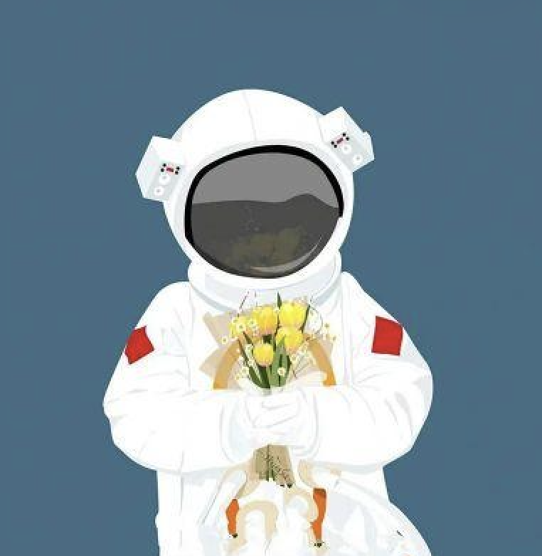

ip-CLI
★ …
IP / 网络工具命令行，pip 包 ipdisp。
PythonCLIPyPI
↗
PyPI
↗
GitHub

Robotics Engineer · AI Explorer · Tech Creator
探索机器人、AI
与未来科技。
分享技术实践、工程经验、效率工具与个人成长。
ABOUT
我是 Frank Wang，从 C++ 工程基础出发，逐步走进机器人与自动驾驶的世界。现在我更关心一件事——把 AI 带进真实的物理系统。
希望用技术实践和内容分享，记录探索未来科技的过程。
PROJECTS
精选的 6 个项目，分两类：CLI 工具集、Web / 小程序应用。
IP / 网络工具命令行，pip 包 ipdisp。
Git 工作流指标 CLI，pip 包 gitkpi。
新机环境一键配置工具（pip / shell）。
微信小程序，日常实用工具集合。
休闲小游戏，水果消除玩法。
Web 端开发者在线工具集合（部署在 Vercel）。
KNOWLEDGE · TECH NOTES
技术笔记将按以下 4 类组织。内容正在建设中——我会在 GitHub repo 中逐步沉淀实战笔记、踩坑记录与教科书片段。
构建中 · slam / nav2 / rviz 实战
构建中 · C++ 工程实践 / Linux 内核碎片
构建中 · 模型选型 / Agent 编排 / 评测
构建中 · 行业观察 / 趋势记录
CONTENT
分散在 4 个平台，按内容深度 / 形式分工。
JOURNEY
从 C++ 出发，逐步把工程能力延伸到物理世界与 AI 智能化。
2018 — 2020
现代 C++ / 模板 / 系统编程入坑。
2020 — 2022
ROS / 感知 / 控制 — 让代码长出物理反馈。
2022 — 2024
规划 / 定位 / 多模块协同 — 在大规模系统上做权衡。
2024 — 现在
端到端 / VLM / 数据闭环 — 做出可落地的智能化。